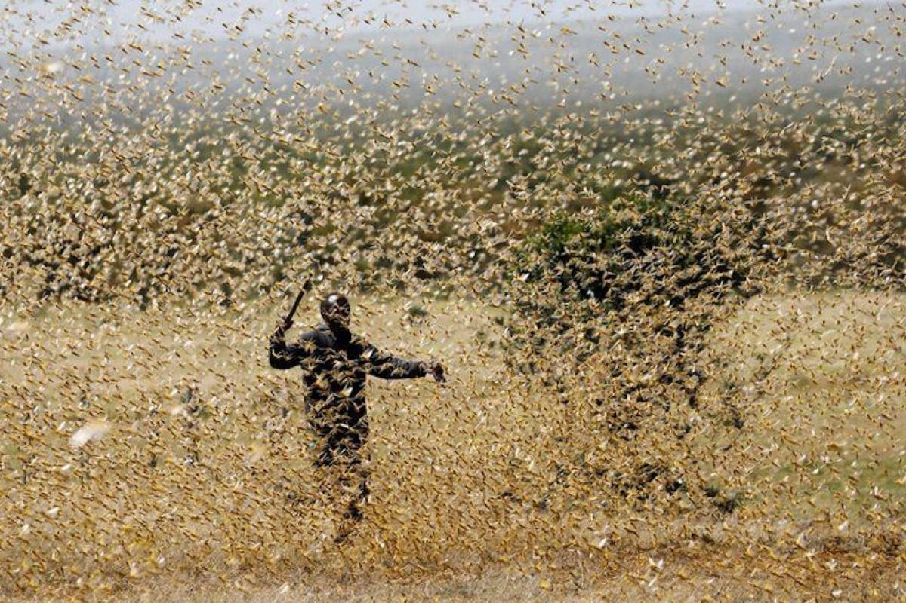

Plaga de langostas arremete contra los cultivos de Manolo y sus trabajadores

San Isidro del Campo, 5 de enero de 2026. La comarca vive uno de los episodios más desconcertantes y trágicos de su historia reciente. Una plaga de langostas de comportamiento anómalo arrasó ayer la finca de cultivos de Manolo R. G., de 57 años, provocando destrozos de enorme magnitud y desencadenando una situación de caos que terminó con varias muertes humanas, según han confirmado fuentes oficiales. El fenómeno, descrito por especialistas como “absolutamente fuera de los patrones conocidos”, ha dejado a la comunidad en estado de shock y ha puesto en marcha un operativo de emergencia sin precedentes. Un amanecer que se volvió pesadilla Todo comenzó alrededor de las 7:15 de la mañana, cuando los primeros trabajadores de la finca detectaron un ruido sordo, similar a un temblor lejano. Minutos después, el cielo comenzó a oscurecerse de forma antinatural. Lo que parecía una tormenta repentina resultó ser una nube compacta de millones de langostas avanzando a gran velocidad. “Era como si el día se hubiera apagado”, relató uno de los trabajadores que logró ponerse a salvo. “Nunca había visto algo así. No venían volando dispersas, sino como una masa uniforme, como si tuvieran un propósito”. La plaga descendió sobre los cultivos con una agresividad inusual, devorando en cuestión de minutos hileras completas de cereal, hortalizas y frutales. La velocidad con la que avanzaban dejó a los trabajadores sin margen de reacción. El caos y las víctimas Las autoridades han confirmado que varias personas fallecieron durante los intentos de evacuación. Aunque la investigación sigue abierta, los primeros informes apuntan a que las muertes se produjeron por caídas, aplastamientos, accidentes y situaciones de pánico extremo mientras los afectados intentaban huir del área infestada. “Las condiciones eran extremadamente peligrosas”, explicó un portavoz del Servicio de Emergencias. “La visibilidad era prácticamente nula, el ruido ensordecedor, y el movimiento del enjambre generaba un ambiente de desorientación total”. Algunos trabajadores quedaron atrapados en zonas donde las estructuras cedieron debido a la acumulación de insectos y al colapso de techos debilitados. Otros, según testigos, se desorientaron en medio de la nube y no lograron encontrar refugio a tiempo. La finca de Manolo: un símbolo devastado La finca de Manolo, una de las más grandes y productivas de la región, llevaba décadas siendo un referente agrícola. Con más de 50 hectáreas dedicadas a cultivos de regadío y secano, era una fuente de empleo y estabilidad para decenas de familias. Manolo, profundamente afectado, apenas pudo pronunciar unas palabras ante los medios: “Es una tragedia. No solo por lo que se ha perdido, sino por la gente que ya no está. Nunca pensé que algo así pudiera ocurrir aquí”. Vecinos y conocidos lo describen como un hombre trabajador, reservado y muy comprometido con su tierra. Algunos aseguran que llevaba semanas preocupado por señales extrañas: un aumento inusual de insectos en zonas periféricas, daños inexplicables en pequeñas áreas de cultivo y comportamientos anómalos en aves que solían sobrevolar la finca. “Él lo intuía”, comentó una vecina. “Decía que algo raro estaba pasando, pero nadie imaginó que sería tan grave”. Un operativo de emergencia sin precedentes La magnitud del desastre obligó a activar un despliegue coordinado entre bomberos, Guardia Civil, servicios sanitarios y especialistas en plagas. El acceso a la finca fue restringido durante horas debido a la persistencia del enjambre, que tardó casi todo el día en dispersarse. Los equipos de rescate tuvieron que emplear vehículos protegidos y equipos especiales para abrirse paso entre los restos de cultivos y estructuras dañadas. La prioridad fue localizar a los trabajadores desaparecidos y asegurar las zonas más inestables. “Era como entrar en otro mundo”, relató uno de los bomberos. “Todo estaba cubierto, no se distinguían los caminos, y el silencio que quedó después de que el enjambre se moviera era aún más inquietante”. Daños materiales catastróficos Los primeros cálculos apuntan a que más del 95% de los cultivos han quedado destruidos. Las hortalizas fueron arrasadas por completo, los frutales han perdido hojas y frutos, y las reservas de grano almacenadas en silos exteriores han quedado inutilizadas. Además, varias naves agrícolas sufrieron daños estructurales debido al colapso de techos y soportes debilitados. La maquinaria quedó inutilizada bajo capas de restos vegetales y polvo levantado por el movimiento masivo de los insectos. “Es un golpe devastador para toda la comarca”, afirmó un portavoz de la cooperativa local. “No solo por la pérdida económica, sino por el impacto emocional y social que esto va a tener”. Un comportamiento inexplicable Expertos en entomología y climatología han sido enviados a la zona para estudiar el origen y el comportamiento de la plaga. Aunque aún no hay conclusiones definitivas, se barajan varias hipótesis: Alteraciones climáticas extremas, que podrían haber favorecido una reproducción masiva. Cambios en ecosistemas vecinos, que habrían desplazado a los enjambres hacia zonas agrícolas. Mutaciones o comportamientos atípicos, aún sin explicación científica. “Lo que hemos visto no encaja con los patrones habituales”, explicó una investigadora del Instituto de Sanidad Vegetal. “La densidad del enjambre, su agresividad y su capacidad de desplazamiento son completamente anómalas”. Una comunidad en duelo El municipio ha decretado tres días de luto oficial. Las banderas ondean a media asta y se han habilitado espacios de apoyo psicológico para familiares y trabajadores afectados. En las calles, el ambiente es de incredulidad. Muchos vecinos se han acercado a la entrada de la finca para dejar flores y mensajes de solidaridad. “Es como si la naturaleza hubiera estallado de repente”, comentó un agricultor. “Nunca pensamos que algo así pudiera ocurrir aquí”. Un futuro incierto Mientras continúan las labores de evaluación y limpieza, el futuro de la finca de Manolo es incierto. Las autoridades han anunciado ayudas de emergencia, pero los expertos advierten que la recuperación será lenta y compleja. Manolo, con la voz quebrada, resumió el sentir de toda la comunidad: “Lo material se puede reconstruir. Lo humano… eso es lo que más duele”.